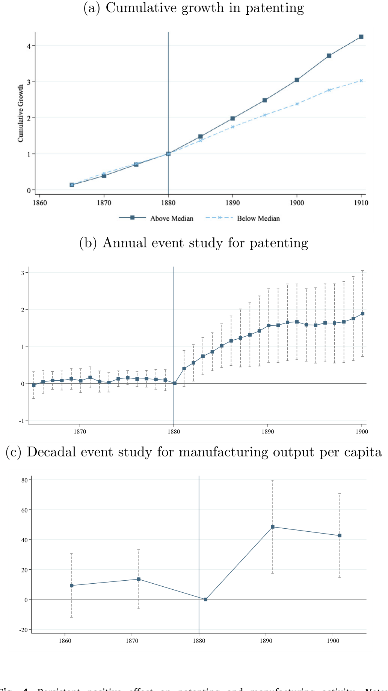
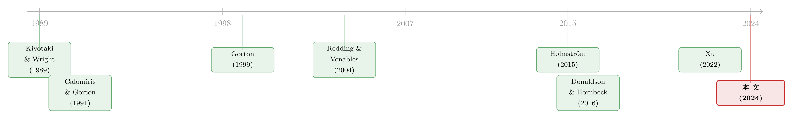

当「钱」本身也是一道交易成本：安全的私人货币如何重塑了一国的经济地理
本文读的是 Xu & Yang (2024, Journal of Financial Economics)：在 19 世纪末的美国，私人银行券因为带着违约风险而成为一种「有摩擦的」交换媒介；当《国家银行法》造出一种被联邦国债足额抵押、可全国平价流通的「安全货币」后，那些更早、更深地接入这张安全货币网络的地方，可贸易品产出、制造业份额与专利创新都显著上升——也就是说，让钱变「安全」，本身等价于降低了一国的贸易成本。
1 一个被我们忽略的交易成本：钱
我们习惯把「交易成本」想成运费、关税、信息搜寻、谈判摩擦这些东西。可是有一类交易成本，藏得太深，深到我们几乎从不把它单独拎出来：货币本身。
今天你我之所以不必操心这件事，是因为我们手里的钱——无论是央行发行的现金，还是银行存款——基本都满足一个朴素的性质：一块钱永远是一块钱，无论你在北京花还是在乌鲁木齐花，无论收款的人认不认识你。用 Holmström (2015) 的话说，好的货币是一种「无需追问」(no questions asked) 的债务工具：没人会在收钱时停下来盘问「你这张票子背后到底押着什么资产、那家发行行还活着吗」。
但这件事并非天经地义。把时钟拨回到 19 世纪的美国，钱恰恰是一件要被反复追问的东西。
那时的美国没有中央银行（美联储要到 1913 年才成立），流通中的货币是成千上万家私人银行各自印发的「州银行券」(state bank notes)。每一张券，本质上都是发行银行的一笔负债，背后押着这家银行自己那一篮子良莠不齐的资产——贷款组合、州政府债券、股票，价值随时在波动。于是一张钞票天然带着两重摩擦：一是赎回风险 (redemption risks)，你拿着票子回发行行，未必能足额换到法定货币或硬币；二是赎回成本 (redemption costs)，你得先把这张票子千里迢迢运回它的发行地才能赎。
这两重摩擦的后果，写在历史的账本上触目惊心。Rockoff (1975) 估计，因银行倒闭造成的银行券损失，从印第安纳州的 7% 一路到明尼苏达州的 63%。而即便银行没倒，券也会按距离打折：论文里提到，靠近费城的东北部各州，州银行券的折价在 10% 以内；而离费城越远，折价越深，最高能到 80%。1842 年伊利诺伊州因为修运河掏空了州财政、引发银行倒闭潮，该州银行券的相对折价一年内从 15% 飙到约 70%。
请记住这个「按距离打折」的特征——它是全文的枢纽。钱的摩擦不是均匀地撒在每笔交易上，而是随距离递增。这一点决定了后文为什么可以把「货币摩擦」翻译成「贸易成本」。
于是问题来了：如果私人货币的不安全，本身就是一种沉重的、随距离放大的交易成本，那么让钱变安全，会给真实经济带来什么？这正是 Xu 和 Yang 想回答的问题。而历史，恰好给了他们一场近乎实验室般干净的变革。
2 一场制度变革：被国债「焊死」的安全货币
1864 年的《国家银行法》(National Banking Act) 凭空造出了一种新银行——「国家银行」(national bank)，它发行的「国家银行券」(national bank notes) 与旧的州银行券有两处要命的不同：
第一，券被联邦政府债务足额抵押。 法律规定国家银行只能按其持有的联邦国债市值的 90% 发行银行券，且抵押品市值缩水必须补券。这一条等于把银行自身那点特异的、会波动的信用风险，从钞票的真实价值里彻底切断了。钞票的价值不再取决于「这家银行经营得好不好」,而只取决于联邦政府这个最安全的债务人。借用 Dang et al. (2017) 的语言，这是一种刻意设计出来、能消除债务面值折价的「最优合约」。
第二，券被监管要求在全国范围内平价 (at par) 互认。 网络内部任意两家国家银行之间的交易，哪怕发行行不同，也总能以零折价、用统一的国家银行券结清。
把这两条放在一起，结论是惊人的：一张国家银行券，在整个国家银行网络内部，是一种「无需追问」的、近乎无摩擦的交换媒介。它对长距离交易尤其有利——因为正是长距离，把州银行券的摩擦放大得最厉害。
（关于「安全 = 无需追问」这条线索如何贯穿现代金融，可参见我之前写的《把「信用敏感」弄丢之后，借钱反而更便宜了——重读 SOFR 折价》；而关于「安全资产是被制度『制造』出来的」，可参见《无风险国债是「制造」出来的》。这篇论文，其实是给这两条线索补上了一段 19 世纪的历史前传。）
但《国家银行法》是一部全国性的法律，怎么从中找到识别因果的变化呢？关键在于：法律虽然是全国性的，国家银行在哪里设立却有巨大的地理差异。 某地多了一家国家银行，就意味着当地多了一个安全货币的「供给与赎回点」，本地经济面对的货币摩擦就被改写了。于是全国的安全货币网络，是一点一点、参差不齐地铺开的。这就给了作者用空间变化来识别的可能。
3 把「货币摩擦」翻译成「贸易成本」：货币市场可达性
接着，一个自然的问题是：怎么把「一个地方接入安全货币网络的程度」量化成一个干净的变量？
作者的做法非常聪明，也是全文方法论上的核心一招：他们把货币交易成本嵌进一个多区域贸易的一般均衡模型里，得到一个刻画当地贸易潜力的指标，称为「货币」市场可达性 (\"monetary\" market access, MMA)。
这个思路的根基是贸易理论里早已成熟的「市场可达性」(market access) 工具——直觉是：一个地方的贸易潜力，等于把它能触及的所有其他市场的规模，按彼此之间的贸易摩擦加权后加总起来。摩擦越低、能触及的市场越大，可达性越高。Donaldson 和 Hornbeck (2016) 正是用这一思路，把铁路降低的运输摩擦，化约成各县「市场可达性」的变化来估算其价值。
Xu 和 Yang 的创新在于：他们把这里的「摩擦」换成了货币摩擦。既然州银行券的摩擦随距离递增，那么本地多接入一点安全货币网络，就等价于对长距离交易降了一道「关税」。于是一个地方的 MMA 变化，有两个来源：
- 第一，直接来源：本地自己进来了一家国家银行，第一次接入网络。
- 第二，间接来源：网络在别处发生了变化，从而改变了本地到最近安全货币供给点的最低成本路径。
这里我要替读者把方法的「灵魂」点破：作者并没有去逐笔测量交易成本（那是不可能的），而是借一般均衡贸易模型，把无数条双边货币摩擦降维成每个地方一个标量 MMA。这是「约简式市场可达性」(reduced-form market access) 方法的精髓——用理论结构换来一个可测、可回归的单一指标。代价是，MMA 的解释要依赖模型设定是否成立。
4 识别策略：人口 6000 的门槛，和「只看别人」的网络
有了 MMA，真正关键的一步在于识别——因为一个地方会不会冒出国家银行，显然不是随机的。繁荣的地方更可能吸引银行进来，而繁荣本身又会带来产出增长，这就是典型的内生性。作者用了两条互补的路径来对付它。
第一条路径：人口门槛的工具变量。 《国家银行法》规定的最低资本要求，是按城镇人口分档的：人口低于 6,000 的镇子，设立国家银行只需筹集 $50,000 股本；而人口在 6,000 到 50,000 之间的镇子，要求翻倍到 $100,000。由于不许跨镇设行、资本必须一次筹足、董事还有居住要求，这道门槛是实打实地咬人的。于是在 6,000 这个人口临界点上，人均所需股本出现了一个不连续的跳升——刚好卡在临界点下方的镇子，设立国家银行的门槛显著更低。
作者用「是否在 1880 年人口普查中跨过 6,000」作为外生的「冲击器」(shifter)，工具化那部分来自「本地新接入网络」的 MMA 变化。为了让样本干净，他们层层筛选：1870 年人口低于 6,000；到 1875 年还没有国家银行（即此前没有本地安全货币供给）；1880 年人口落在 4,000 到 8,000 这个窄带里。窄带保证了门槛两侧的镇子在可观测与不可观测特征上都尽量相似——作者也确认了 1880 年人口高于/低于 6,000 两组镇子的事前特征没有显著差异。
第一阶段很强：1880 年处在人口临界点之下，对应到该十年中段 MMA 相对上一个十年提高约 62%（F 统计量 9.6）；工具同时预测本地获得国家银行的直接概率上升约 52%。
第二条路径：「只看别人」的网络外生变化。 这是我个人最欣赏的一招。作者把焦点地区自身的国家银行网络冻结在样本期初，只允许它的 MMA 因为「网络其余部分的变化」而变动。换句话说，本地 MMA 的变化，完全来自外地银行网络的演化，与本地自身的任何冲击（本地生产率变化、本地信贷供给变化等）无关。他们还在县内、25 英里、50 英里、100 英里等不同半径上分别构造了这个度量。
这两条路径解决的是同一个核心担忧——银行信贷渠道。一个怀疑论者会说：你看到的产出增长，会不会只是因为国家银行进来后放了更多贷款（标准的信贷供给渠道，参见 Paravisini et al., 2015；Xu, 2022），而跟「货币变安全」毫无关系？第二条路径恰恰排除了本地自身信贷供给这个内生成分；此外作者还在所有设定里控制了国家银行的放贷量作为该渠道的代理，结果系数基本不变。
为保持两套方法可比，分析都聚焦于「第一次获得国家银行」的镇子样本。两条路径，一条抓「本地直接接入」，一条抓「纯外部网络外溢」，从两端夹逼同一个因果量——这种「互补识别」的设计，是这篇论文经验上最扎实的地方。
估计采用两期的双重差分 (difference-in-differences, DiD)。控制变量包括 1870–1880 的人口变化（吸收增长轨迹差异）、事前的金融发展水平、事前的物理贸易成本。识别假设是：在控制变量给定的条件下，刚好处在人口临界点下方的地方，1880 年之后没有同期的、会让其结果系统性不同的其他冲击。
5 主要结果：可贸易品、制造业、与创新的三连击
那么，让钱变安全，到底带来了什么？作者给出三组层层递进的结果，而它们都指向同一个故事内核：降低货币摩擦 ≈ 降低贸易成本 → 利好可贸易部门。
其一，可贸易品产出大涨。 MMA 每提高一个标准差，可贸易品产出分别上升 15.1%（用工具化的「接入网络」变化）和 6.2%（用「网络其余部分」变化）。两个数字方向一致、量级合理——前者更大，因为它捕捉的是「本地直接接入 + 外溢」的合力。
更精细的一步在农业内部：所有农产品都能交易，但只有一部分属于全国性大宗商品市场。按定义，这类大宗商品的最终价格更依赖全国市场，于是本地贸易摩擦的下降会更充分地传导给生产者、变成更高的利润，激励农户把生产向大宗商品倾斜。作者发现，MMA 每升一个标准差，大宗商品产出份额上升 2.3%。这是一个很漂亮的「机制内证」：不是所有产出一起涨，而是越可贸易的、越依赖远方市场的那部分涨得越多。
其二，经济结构向制造业转型。 可贸易部门的增长主要由制造业驱动，整个经济变得更「制造业密集」。MMA 每升一个标准差，制造业在产出和就业中的份额各相对其事前均值上升 8.4%。这与结构转型理论（如 Herrendorf et al., 2014）一致：最终产品相对价格的变化，会引导要素在部门间重新配置。
而制造业的增长又主要由投入品使用驱动。作者点出一个常被忽视的「投入品采购」(input sourcing) 渠道：降低采购投入的摩擦，不仅能让企业用更多投入，还能让它们在更广的范围里寻源、改善投入品的匹配质量——这一条能在不依赖信贷扩张的情况下提高产出（进口更好的投入让企业更高产，呼应 Goldberg et al., 2010）。他们发现，就业增长叠加投入品增加，共同驱动了产出效应。这又一次把「信贷渠道」这个对手按住了。
其三，长期创新与产出的持续抬升。 这是故事的最后一跳，也是最有想象力的一跳。Schmookler (1954) 曾提出一个假说：内战后几十年美国专利活动的变化，可能源于企业能触及的市场（即市场可达性）的扩张——市场更大了，企业才更有动力投资于提升生产率的技术。Xu 和 Yang 直接检验了这个假说：MMA 每升一个标准差，累计创新量（专利授予数）相对内战前增加到约 1.3 倍。而且制造业产出的抬升一直持续到至少 1900 年。

Figure 4: Persistent positive effect on patenting and manufacturing activity. Notes:
如图 4 所示，对专利与制造业活动的正向效应不是昙花一现，而是持续多年——这正是「降低货币摩擦改变了企业的长期投资激励」这一机制最有力的脚注。
6 文献脉络：从「钱为什么是钱」到「钱的摩擦值多少钱」
把这篇论文放回它所在的学术坐标系，它其实站在三条河流的交汇处。
第一条河是货币作为交换媒介的理论。Kiyotaki 和 Wright (1989) 微观奠基了法定货币为何能作为交换媒介流通；Holmström (2015) 提出安全债务的「无需追问」性质；Bolt et al. (2023) 则讨论安全货币资产如何过渡为法定货币。这条河回答的是「钱为什么是钱」。
第二条河是自由银行时代与银行券折价的经济史。Calomiris 和 Gorton (1991) 梳理了银行恐慌的成因；Rolnick 和 Weber (1982)、Rockoff (1975) 量化了野猫银行与银行券损失；Gorton (1999) 与 Ales et al. (2008) 把银行券折价建模成对赎回风险与成本的定价。这条河描述的是「钱的不安全，长什么样、值多少」。

第三条河是约简式市场可达性方法与银行—贸易的实证。Redding 和 Venables (2004) 奠定了市场可达性的一般均衡基础；Donaldson 和 Hornbeck (2016) 用它估算了铁路的价值；而 Amiti & Weinstein (2011)、Paravisini et al. (2015)、Xu (2022) 等则记录了银行信贷供给对（历史与现代）贸易的影响。
这篇论文的位置，恰好是把第一、二条河（货币的安全性）注入第三条河（市场可达性与贸易）：它第一次提供了经验证据，证明提升私人货币的安全性——通过监管其背后资产的数量与质量——会正向影响真实经济活动。它也呼应了经济史上那场老争论：Sylla (1969, 1982) 认为《国家银行法》过高的资本要求因为没能充分扩张银行券供给而拖累了发展，Cagan (1963) 把 19 世纪末的增长归因于货币稳定——这篇论文把「货币交易摩擦」明确指认为那些效应背后的一条渠道。
7 一点方法上的诚实：为什么这里没有一组「带标注的公式」
读到这里，熟悉我行文习惯的读者也许在等我把 MMA 的方程一行行拆开来讲。但我要在此打住，并且诚实地说明原因：MMA 源自一个多区域贸易一般均衡模型，其精确的函数形式（贸易弹性、距离衰减、市场规模如何加权）需要严格复现论文原始方程，而我手中可读到的正文在这一处是截断的。与其照着市场可达性的通用模板「拼」一个看似像、实则未必是作者那一个的方程，我宁可把它留白——给你一个我编造的公式，远比承认这一处看不全要糟糕。
直觉层面，把握住一句话就够了：MMA 是「把所有能触及的市场规模、按彼此货币摩擦加权后加总」的一个标量；货币变安全，等于把远距离那一项的「摩擦折扣」调小，于是 MMA 上升。后面所有回归，都是在问「这个标量动一动，真实变量跟着动多少」。
评论与延伸（Q&A + 研究方向）
(a) 几个可能的疑问
Q：这跟标准的「银行信贷渠道」到底有什么区别？凭什么说是『货币』而非『信贷』在起作用？
这是全文最该被追问的地方，作者也最用力。核心区分有三：其一，第二条「只看网络其余部分」的识别路径，按构造排除了本地自身的信贷供给变化；其二，所有设定都控制了国家银行的放贷量作为信贷渠道代理，系数不变；其三，机制证据指向「投入品采购」而非「信贷扩张」——产出增长伴随投入品增加与就业增加，而这条渠道可以不依赖本地信贷扩张。当然，作者也坦承无法完全排除信贷渠道，只是把它的解释空间压到了很小。
Q：人口 6000 这个门槛，真的外生吗？会不会镇子为了拿到便宜银行而操纵人口、或者门槛附近本就有别的政策断点？
设计上有几道防线：样本限定在 1880 年人口 4,000–8,000 的窄带，且这些镇在 1875 年都还没有国家银行、1870 年都在 6,000 以下，起点一致；事前可观测特征在门槛两侧无显著差异。但严格说，这并非一个标准的断点回归 (RDD)——作者是把「跨过门槛」当成 DiD 里的外生冲击器、再做工具变量。
F统计量 9.6 算得上强但不算极强，弱工具的隐忧不能说完全没有。人口操纵在 19 世纪的普查精度下大规模发生的可能性较低，但理论上无法证伪。
Q：MMA 的因果解释，依赖那个贸易模型设定吗？模型错了结论会塌吗？
部分依赖。MMA 是一个理论结构化的度量，它把贸易弹性、距离衰减等参数「焊」进了一个标量里。好处是可回归、可比较；代价是若模型设定（比如距离如何影响货币摩擦）偏离现实，MMA 的量级解释会有偏。不过定性结论——「越接入安全货币网络、越利好可贸易/制造/创新部门」——对设定细节的依赖要弱得多，且被三组方向一致的结果交叉印证。
Q：「一个标准差 MMA → 产出 +15.1%」这个量级，是不是大得不太真实？
要小心解读。15.1% 来自工具化的「接入网络」变化，捕捉的是本地首次接入安全货币网络这件大事的合力效应，本身就是一个不小的离散冲击；而「只看网络其余部分」给出的 6.2% 是更保守、更纯净的外溢效应。两者并列恰恰说明：本地直接接入的效应，比纯外溢大约一倍，这在经济上是讲得通的。把 15.1% 当成「随便动一动 MMA 就有的弹性」会高估，它对应的是一次实打实的制度接入。
Q：为什么分析在 1900 年戛然而止？是不是为了藏起后面不利的结果？
作者给了明确理由：县级制造业数据在 1910 年缺失，且到 1920 年水平已不再显著不同；考虑到一战和 1913 年美联储成立带来的巨大变化，把样本终点定在 1900 年是为了避免这些混淆。这是合理的，但也意味着我们看不到「美联储成立后这条渠道是否被中央银行的统一货币所取代」——而那恰恰是最有政策含义的一段。
Q：这段 19 世纪的历史，对今天的稳定币 (stablecoin) 监管真有借鉴意义吗？
作者把这点作为论文的首要现实关切。逻辑同构得惊人：稳定币也是私人发行、以「足额安全储备（如美债）」为锚来获得「稳定」之名的支付工具，与国家银行券「以国债足额抵押」的设计如出一辙。这篇论文给出的历史证据是：当监管把私人货币的背书资产的数量与质量管住、使其真正安全时，真实经济会获益。这为「储备要求型」稳定币监管提供了一个正面的历史类比。（关于私人/数字货币的治理与竞争，可参见《谁来给账本盖章？——去中心化记账，到底什么时候才划算》与《谁先按下「数字化」按钮？》。）
(b) 几个可能的研究问题与提案
1. 安全货币的「赢家与输家」：网络接入是否加剧了地区不平等？
【经济故事】MMA 的提升对「越可贸易、越依赖远方大市场」的地方利好越大。那么安全货币网络的铺开，会不会让本就更接近网络核心的地区获益更多，从而放大而非缩小地区差距？这与「市场可达性—集聚」的经济地理逻辑直接相关。 【可行性】中。所需数据（县级产出、人口、专利、银行分布）作者已构建并公开（论文标注了原始数据链接）。识别上可沿用其 MMA 框架，按事前到网络核心的距离做异质性分析。难点在于把「集聚」与「转移」（本地增长是否以邻县衰退为代价）区分开，需要一般均衡式的反事实测算。
2. 美联储成立（1913）作为「安全货币全国化」的终极实验。
【经济故事】本文止于 1900 年，留下一个诱人的缺口：当美联储用统一货币把「安全货币」普及到全国后，MMA 的地区差异是否被抹平、其真实效应是否随之消失？这等于检验「私人安全货币的红利，是否会被公共货币的统一所吸收」。 【可行性】中偏低。需要把数据延伸到 1910–1930，但作者已指出 1910 年县级制造业数据缺失，且一战是巨大混淆。可行的折中是聚焦支付摩擦的直接度量（票据交换、汇兑成本），而非制造业产出。
3. 把「货币摩擦」搬到现代公司债/信用市场：信息敏感度与流动性溢价。
【经济故事】本文的内核——「债务越『无需追问』，越能充当低摩擦的交换/抵押媒介」——在现代公司债市场有直接对应：信息越不敏感的债券，越容易被用作回购抵押品、流动性越好、溢价越低。可以构造一个债券层面的「信息敏感度」度量，检验它对二级市场流动性与抵押品价值的因果影响。 【可行性】高。TRACE 成交数据、回购市场抵押品折扣 (haircut) 数据均可得；识别可借助评级跨越投资级门槛、或央行合格抵押品清单纳入等准自然实验（与我之前关注的 SOFR 折价、央行合格抵押品等主题一脉相承）。
4. 外资持有人与「货币安全」的跨境版本。
【经济故事】把「安全货币降低交易摩擦」推广到跨境：当一国国债被广泛接纳为全球安全资产、可在离岸市场无折价流通时，是否会降低该国出口商的结算与融资摩擦、进而提升其可贸易部门？这相当于给本文加一个汇率与储备货币维度。 【可行性】中。需要离岸结算、贸易融资货币选择（可参考企业债券货币选择数据）等数据；识别较难，可考虑某国资产被纳入全球安全资产篮子（如纳入主要债券指数、获得储备货币地位变化）作为冲击。诚实地说，跨境层面的外生变化更难找，是这条线的主要障碍。
我的判断
贡献。 这篇论文最漂亮的地方，是把一个我们几乎从不单独计量的成本——「货币本身的不安全」——用贸易理论的市场可达性框架变成了一个可测、可回归的标量，并借 19 世纪美国一场制度断裂提供了首份「让私人货币变安全 → 真实经济获益」的因果证据。它的方法论示范意义甚至超过其历史结论：货币摩擦可以、也应该被当作一种随距离递增的「贸易成本」来处理。
对识别的担忧。 我最在意两点。其一，F 统计量 9.6 的工具谈不上稳如磐石，弱工具下的局部平均处理效应解释要谨慎；那个 15.1% 的弹性，是「一次离散接入」的合力，不宜被读成平滑的边际弹性。其二，MMA 是理论结构化的度量，其量级解释绑定在贸易模型的设定上——定性结论稳健，但具体百分比的可信度，取决于你多大程度上相信那个一般均衡结构。所幸两条互补识别路径与三组方向一致的结果，把「信贷渠道」这个最大对手压制得相当好。
后续想看到什么。 我最想看的是 1913 年之后的「下半场」：当公共的、统一的安全货币普及全国，私人安全货币创造的这份地区红利是被抹平、还是被新的摩擦（准备金、监管）替换？这不仅是历史问题，更直接关系到今天我们该如何在「私人稳定币」与「央行数字货币」之间划线。这篇论文给了一个有力的起点，但故事远未讲完。
参考文献
- Ales, L., Carapella, F., Maziero, P., & Weber, W. E. (2008). A model of banknote discounts. Journal of Economic Theory 142(1), 5–27.
- Amiti, M., & Weinstein, D. E. (2011). Exports and financial shocks. Quarterly Journal of Economics 126(4), 1841–1877.
- Bolt, W., Frost, J., Shin, H. S., & Wierts, P. (2023). The Bank of Amsterdam and the limits of fiat money.
- Cagan, P. (1963). The first fifty years of the national banking system. In Banking and Monetary Studies, 15, 42.
- Calomiris, C. W., & Gorton, G. (1991). The origins of banking panics: models, facts, and bank regulation. In Financial Markets and Financial Crises, University of Chicago Press, 109–174.
- Dang, T. V., Gorton, G., Holmström, B., & Ordoñez, G. (2017). Banks as secret keepers. American Economic Review 107(4), 1005–1029.
- Donaldson, D., & Hornbeck, R. (2016). Railroads and American economic growth: A "market access" approach. Quarterly Journal of Economics 131(2), 799–858.
- Gorton, G. (1999). Pricing free bank notes. Journal of Monetary Economics 44(1), 33–64.
- Herrendorf, B., Rogerson, R., & Valentinyi, Á. (2014). Growth and structural transformation. Handbook of Economic Growth 2, 855–941.
- Holmström, B. (2015). Understanding the role of debt in the financial system. BIS Working Paper.
- Kiyotaki, N., & Wright, R. (1989). On money as a medium of exchange. Journal of Political Economy 97(4), 927–954.
- Paravisini, D., Rappoport, V., Schnabl, P., & Wolfenzon, D. (2015). Dissecting the effect of credit supply on trade: Evidence from matched credit-export data. Review of Economic Studies 82(1), 333–359.
- Redding, S., & Venables, A. J. (2004). Economic geography and international inequality. Journal of International Economics 62(1), 53–82.
- Rockoff, H. (1975). The Free Banking Era: A Reconsideration. Arno Press.
- Rolnick, A. J., & Weber, W. E. (1982). Free banking, wildcat banking, and shinplasters. Federal Reserve Bank of Minneapolis Quarterly Review.
- Schmookler, J. (1954). The level of inventive activity. Review of Economics and Statistics, 183–190.
- Sylla, R. (1969). Federal policy, banking market structure, and capital mobilization in the United States, 1863–1913. Journal of Economic History 29(4), 657–686.
- Sylla, R. (1982). Monetary innovation in America. Journal of Economic History 42(1), 21–30.
- Xu, C. (2022). Reshaping global trade: The immediate and long-run effects of bank failures. Quarterly Journal of Economics 137(4), 2107–2161.
- Xu, C., & Yang, H. (2024). Real effects of supplying safe private money. Journal of Financial Economics 157, 103868.